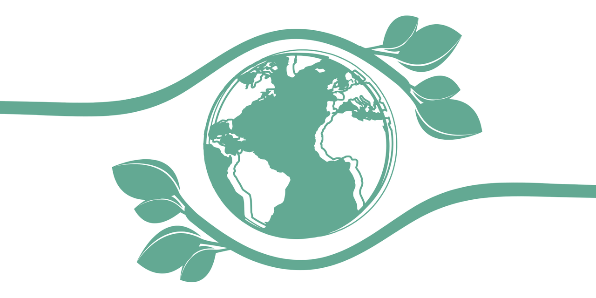
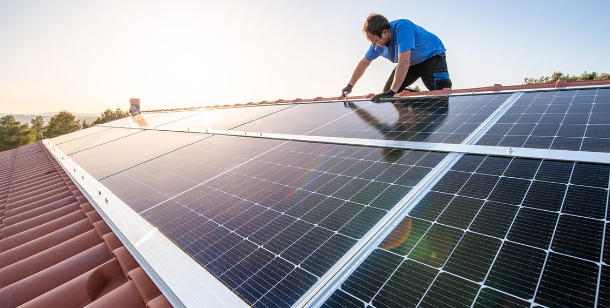
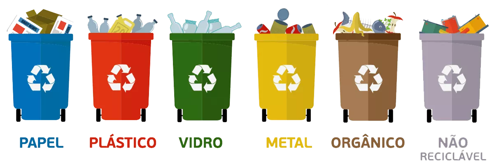
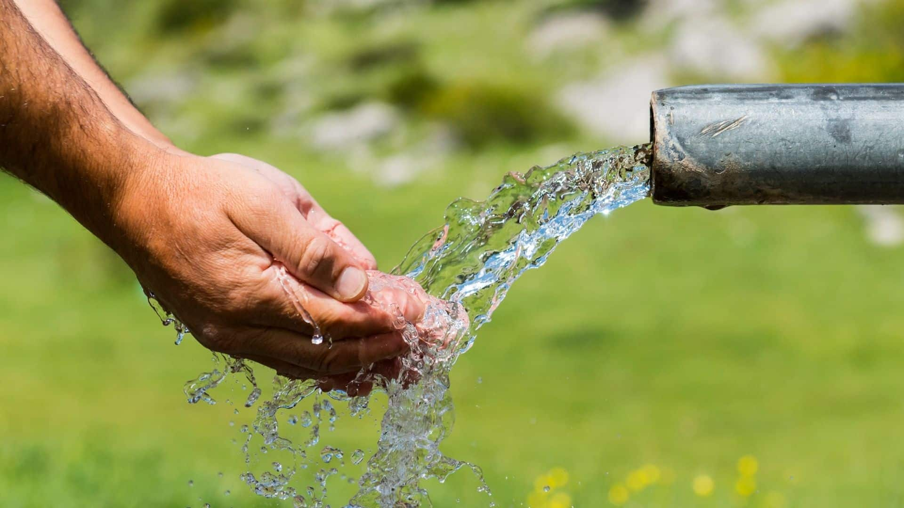

Bem-vindo!
Este site foi desenvolvido como parte da Atividade Prática Supervisionada (APS) com o tema "Desenvolvimento Sustentável". Neste trabalho, abordamos temas fundamentais para o nosso futuro, com foco em práticas que podem ser adotadas para melhorar a sustentabilidade do nosso planeta. A sustentabilidade envolve o uso responsável dos recursos naturais, a proteção do meio ambiente e a promoção de um desenvolvimento econômico que atenda às necessidades do presente sem comprometer as gerações futuras.
Através deste site, buscamos divulgar informações e incentivar a prática de hábitos sustentáveis no dia a dia. A sustentabilidade é um conceito amplo e pode ser aplicada em várias áreas, como energia, resíduos, água, consumo e muito mais. Neste espaço, exploraremos quatro tópicos essenciais para a construção de um futuro mais sustentável.
Energia Limpa e Renovável
A energia limpa e renovável é fundamental para reduzir as emissões de gases de efeito estufa e combater as mudanças climáticas. Fontes como solar, eólica, hidráulica, biomassa e geotérmica não apenas geram eletricidade de forma limpa, mas também contribuem para a diversificação da matriz energética global, diminuindo a dependência de combustíveis fósseis.
No Brasil, a energia hidrelétrica é a principal fonte de energia renovável. No entanto, o país também tem avançado consideravelmente na adoção de energia solar e eólica. A energia solar, por exemplo, tem mostrado um crescimento expressivo, com muitas famílias e empresas instalando painéis solares para gerar sua própria eletricidade e reduzir a conta de energia.
Investir em energias renováveis não só contribui para um ambiente mais limpo, mas também cria oportunidades de emprego e desenvolvimento tecnológico. Empresas e governos estão cada vez mais incentivando a transição para fontes de energia renováveis, e o futuro da energia será inevitavelmente mais verde.
Gestão de Resíduos e Reciclagem
A gestão adequada de resíduos sólidos é um dos maiores desafios ambientais da atualidade. O descarte inadequado de resíduos pode levar à poluição dos solos, das águas e do ar. A implementação de práticas de reciclagem e a promoção da coleta seletiva são fundamentais para minimizar esses impactos.
A reciclagem de materiais como plástico, papel, vidro e metal contribui para a redução do uso de recursos naturais, diminui a quantidade de lixo enviado aos aterros sanitários e economiza energia. Além disso, a compostagem de resíduos orgânicos transforma lixo em adubo, o que é excelente para a agricultura e jardinagem.
Em muitas cidades, a educação sobre a separação de resíduos e a criação de programas de coleta seletiva têm levado a um aumento da reciclagem. No entanto, ainda há muito a ser feito. A conscientização da população e a adaptação de infraestruturas adequadas para o tratamento e descarte de resíduos são essenciais para garantir um ambiente mais limpo e sustentável.
Água Potável e Saneamento
A água potável é um recurso essencial para a vida humana e para a saúde pública. Contudo, milhões de pessoas no mundo ainda não têm acesso à água tratada e ao saneamento básico. A falta de acesso a esses serviços pode levar a doenças, poluição e escassez de água.
O desperdício de água também é um problema crescente. A conscientização sobre o uso racional da água, como consertar vazamentos, reduzir o tempo de banho e adotar sistemas de reutilização da água, são práticas simples que podem gerar grandes benefícios.
Além disso, a preservação das fontes de água, como rios e nascentes, é vital para garantir o abastecimento no futuro. O tratamento de esgoto, o controle da poluição hídrica e o investimento em infraestrutura de saneamento são medidas fundamentais para garantir água limpa e tratada para todos.
Consumo Consciente
O consumo consciente envolve a reflexão sobre as escolhas que fazemos como consumidores. Antes de adquirir um produto, é importante questionar se realmente precisamos dele e qual será o impacto ambiental e social da sua produção e descarte.
Optar por produtos duráveis, com menos embalagem e provenientes de fontes responsáveis, pode reduzir significativamente a pegada ecológica. Além disso, adotar práticas como a reutilização de produtos, o reparo de objetos e a doação de itens que não usamos mais, contribui para uma economia mais circular.
O consumo consciente também está relacionado ao respeito aos direitos trabalhistas e à escolha por marcas que se preocupam com a ética e a justiça social. Em um mundo com recursos finitos, é essencial repensar nossos hábitos de consumo para garantir um futuro mais justo e sustentável para todos.

Dicas Sustentáveis
- Reduza o uso de plástico.
- Desligue luzes e aparelhos quando não estiverem em uso.
- Reaproveite a água da chuva para regar plantas.
- Separe e recicle o lixo corretamente.
- Coma mais alimentos de produção local e orgânica.
- Prefira transporte público ou bicicletas.
- Evite o desperdício de alimentos e doe o que não for consumido.
- Considere adotar uma dieta vegetariana ou vegana.
Referências
- BRASIL. Ministério do Meio Ambiente. https://www.gov.br/mma
- ANEEL. Agência Nacional de Energia Elétrica. https://www.aneel.gov.br
- ABRELPE. Associação Brasileira de Empresas de Limpeza Pública. https://www.abrelpe.org.br
- ONU BRASIL. Objetivos de Desenvolvimento Sustentável. https://brasil.un.org/pt-br/sdgs
- IBGE. Indicadores de Desenvolvimento Sustentável. https://www.ibge.gov.br